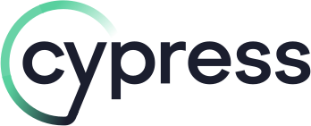
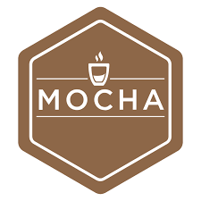
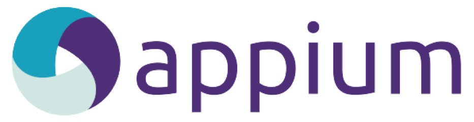
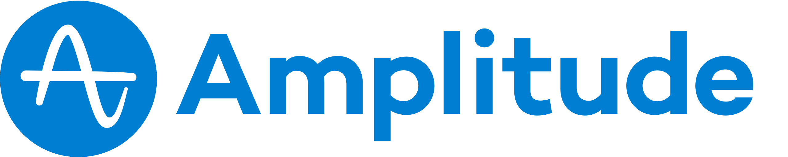
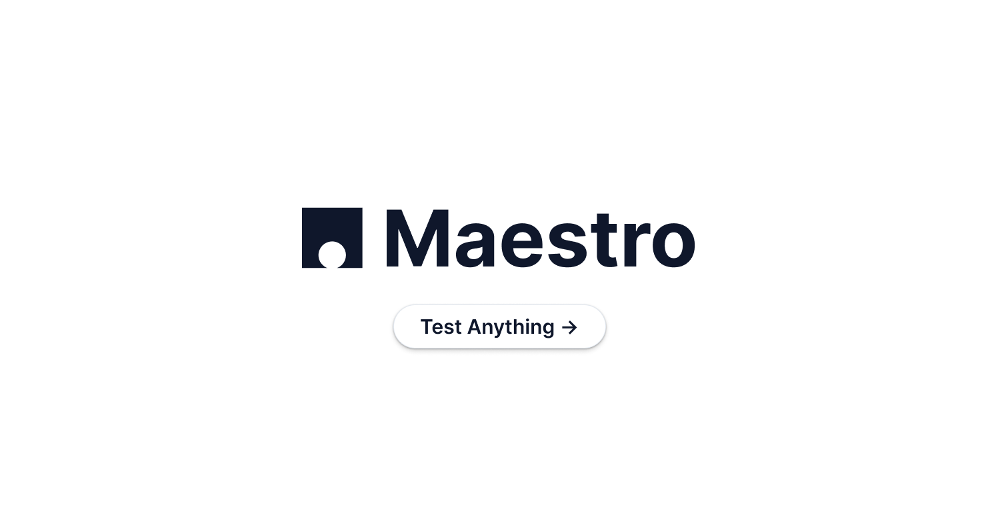

Skills & Expertise





I'm a Senior Quality Engineer from the UK with experience working in Germany, New Zealand and Australia. Currently the sole QA supporting multiple squads at ClearScore, I focus on developer-led testing, automation and building internal tooling to improve engineering productivity and software quality.
Outside of work, I'm an avid skier, mountain biker and all-around extreme sports enthusiast. I've played lead guitar in the London Video Game Orchestra and run a 3D-printing side business - visit Fusion Creations for more info.
View Resume




As sole QA for the DriveScore product, I defined the test strategy as the team scaled from 1 to 3 squads. Key achievements include reworking native CI pipelines (PR builds from 1h15 to 13 min), reducing GitHub Actions costs by 92%, building a self-service test user platform, and migrating mobile automation from CodeceptJS to Maestro for fully automated regression in CI.
During my time in New Zealand I worked for the Electoral Commission doing data entry. This was a tedious manual process of inputting the data from handwritten forms into a database. I built a tool using the Google Vision API to read the handwritten forms and inject the data into the database. This improved form processing time by ~10x.
The project I was working on in Roam was a product called Backr. We wanted to display some key metrics to the team in a visually appealing way to motivate us and show our impact. I used the Google Maps API to pull sign-up data from our analytics platform and plotted it on a map of Australia, showing where each new user was signing up from every day.
I created an NPM package that downloads the latest versions of your apps from Microsoft App Center. It checks if you have an apps folder and if not, creates one. It then finds your app based on the title that you passed through to the function and checks if you have the most recent version downloaded. If not, then it downloads it for you!
"Rhys is an incredible performer; he fully applies himself to problems and never stops until he solves the problem no matter how complex."
Senior Backend Developer - ClearScore
"Rhys came in and immediately started improving things! We were in the middle of trying to change how we engage with QA in the team and he had some great suggestions right from the start."
Senior QA - Roam
"He constantly pushed himself beyond what is expected of him in the role. When two senior QAs left, he responded in the most positive way possible: taking charge of QA and testing in the team and making himself available as the go-to person in his project team."
Head of QA - ClearScore
"I've seen nothing but dedication and exceptional output from Rhys. The Halo project simply would not have shipped on time without his contributions - and certainly not at the level of quality and organisation we achieved. It has genuinely been a career highlight for me to manage Rhys."
Senior Engineering Manager - ClearScore/DriveScore